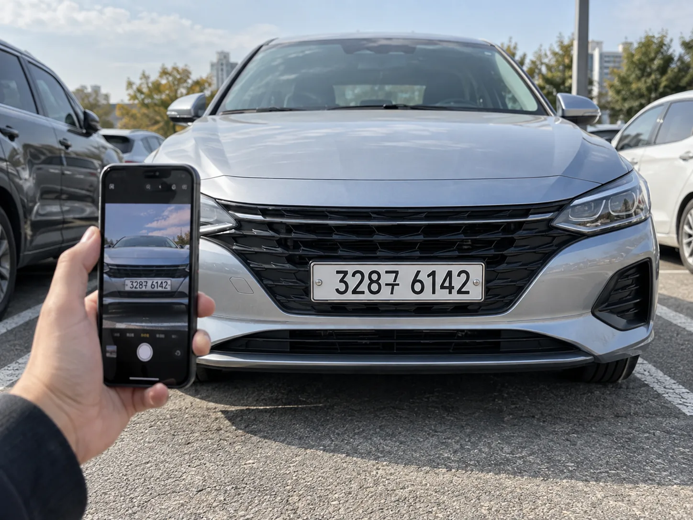
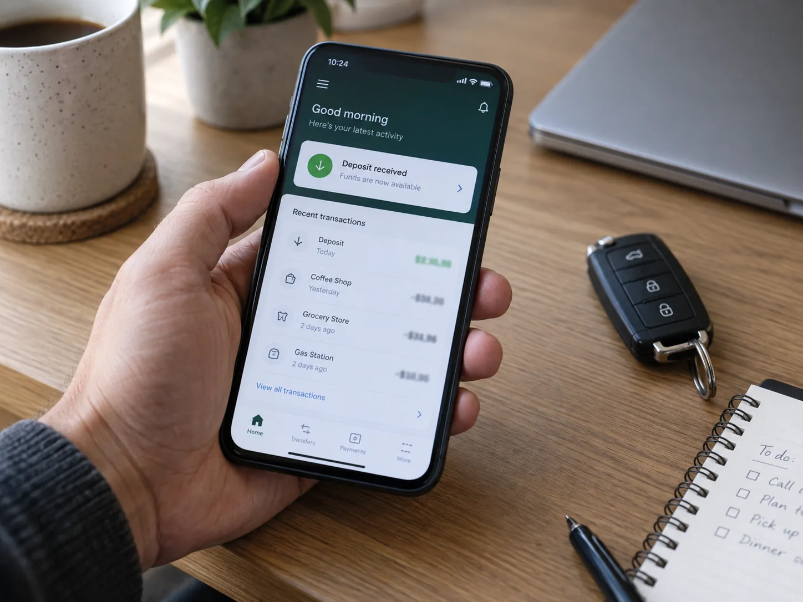

▲ 마일리지 특약의 핵심은 가입이 아니라 사진이다. 계기판 누적 주행거리(ODO)를 정해진 기간 안에 촬영해 등록해야 할인·환급이 확정된다
자동차보험 갱신 안내서를 받으면 특약 항목에 '마일리지 할인' 같은 이름이 하나쯤 적혀 있습니다.
체크만 하면 끝나는 줄 아는 사람이 많습니다.
실제로는 그때부터 시작입니다. 사진을 찍어야 하고, 정해진 기간 안에 올려야 하고, 만기 때 한 번 더 해야 합니다. 이 절차 하나를 놓쳐서 몇만 원에서 몇십만 원을 못 받는 가입자가 해마다 나옵니다.
1. 적게 타면 돌려준다 — 그런데 방식이 두 가지다
마일리지 특약(주행거리 연동 특약)은 1년간 실제로 얼마나 탔는지에 따라 보험료를 깎아주는 제도입니다. 자동차보험은 주행거리가 길수록 사고 위험이 커진다고 보기 때문에, 반대로 적게 타는 운전자에게는 그만큼 보험료를 되돌려줍니다. 문제는 이 '되돌려주는' 방식이 보험사마다, 상품마다 다르다는 점입니다.
| 방식 | 작동 구조 | 특징 |
|---|---|---|
| 선할인형 | 가입 시 예상 주행거리를 신고 → 보험료를 미리 할인해 청구 | 만기 때 실제 거리가 신고보다 많으면 차액을 추가로 내야 할 수 있음 |
| 후환급형 | 보험료는 정상 납부 → 만기 때 실제 주행거리를 확인해 차액을 돌려줌 | 적게 타면 이득, 많이 타면 환급이 없을 뿐 손해는 아님 |
📍 어느 쪽이든 '가입 자체'는 공짜입니다
선할인형은 예상보다 많이 타면 추가 정산이 생길 수 있지만, 후환급형은 애초에 정상 보험료를 내는 구조라 추가로 손해 볼 일이 없습니다. 그래서 주행거리가 애매하다면 일단 가입해두는 편이 유리합니다. 다만 두 방식 모두 사진 등록을 하지 않으면 할인·환급이 적용되지 않는다는 점은 동일합니다. 본인이 가입한 특약이 어느 방식인지는 보험증권의 특별약관 항목이나 다이렉트 앱 계약내역에서 확인할 수 있습니다.
2. 보험사별 할인율 — 같은 '마일리지'라도 차이가 크다
할인율은 연간 주행거리 구간에 따라 계단식으로 커집니다. 업계 자료를 종합하면 연간 주행거리가 1,000~15,000km 구간에서 할인율이 촘촘하게 나뉘며, 가장 적게 타는 구간에서는 보험사에 따라 최대 40%대까지 할인되는 상품도 있습니다.
| 보험사 | 대표 상품명 | 최대 할인율 구간 |
|---|---|---|
| 현대해상 | 에코 마일리지 특약 | 연 5,000km 이하 시 최대 약 46% |
| 삼성화재 | Eco마일리지특약 | 연 5,000km 이하 시 최대 약 42% |
| KB손해보험 | 마일리지 주행거리 할인 특약 | 연 5,000km 이하 시 최대 약 37.7% |
✅ 할인율 비교, 이렇게 확인하세요
· 위 수치는 대표적인 최대 구간 예시일 뿐, 실제 적용률은 가입 시점·차종·보험사 정책에 따라 달라집니다
· 정확한 구간별 할인율은 가입 전 각 보험사 다이렉트 홈페이지 상품 안내에서 확인해야 합니다
· 손해보험협회가 운영하는 보험다모아에서는 여러 회사 견적을 한 번에 비교할 수 있어, 마일리지 특약 적용 후 최종 보험료를 나란히 놓고 볼 수 있습니다
여러 보험사의 마일리지 특약 적용 보험료를 한 번에 비교하려면 아래를 이용할 수 있습니다. 보험다모아 바로가기
▲ 다이렉트 앱 계약내역에서 본인이 가입한 마일리지 특약이 선할인형인지 후환급형인지, 몇 % 구간인지 확인할 수 있다 ⓒ 카프리즘
3. 진짜 핵심 — 사진 등록 타이밍이 전부다
할인율을 아무리 잘 따져도 사진 등록을 놓치면 의미가 없습니다. 마일리지 특약은 가입 시점과 만기 시점, 총 두 번 주행거리를 증빙해야 확정됩니다.
| 단계 | 등록 시점 | 제출物 |
|---|---|---|
| ① 최초 등록 | 보험 가입 직후(보험사별로 가입일 기준 약 15~45일 이내 창구 개방) | 번호판 사진 1매 + 계기판 누적 주행거리 사진 1매 |
| ② 최종 등록 | 만기일 전후 일정 기간(통상 만기 전 30~45일 ~ 만기 후 30일 안팎, 보험사별 상이) | 번호판 사진 1매 + 계기판 누적 주행거리 사진 1매 |
⚠️ 사진 촬영에서 가장 흔한 실수
· 트립(trip) 거리와 헷갈림 — 계기판에는 리셋 가능한 구간 거리(트립)와 누적 총 거리(ODO)가 함께 표시되는 경우가 많습니다. 특약 심사에 인정되는 것은 ODO 누적 거리뿐입니다
· 번호판을 빼먹음 — 차량을 특정할 수 있는 번호판 사진을 함께 등록해야 심사가 완료됩니다. 계기판만 찍어 반려되는 사례가 적지 않습니다
· 파일 형식 문제 — 일부 보험사 앱은 JPG·JPEG만 인정하고 스크린샷·PNG는 반려합니다
· 숫자가 흐릿하거나 조명이 반사돼 자릿수를 읽을 수 없으면 재촬영을 요구받습니다

▲ 계기판 사진만으로는 심사가 끝나지 않는다. 차량을 특정하는 번호판 사진을 함께 등록해야 정상 접수된다 ⓒ 카프리즘
4. 신청 절차의 함정 — 기간을 놓치면 되돌릴 방법이 없다
가장 치명적인 실수는 등록 기간 자체를 놓치는 것입니다. 최초 등록도, 최종 등록도 '아무 때나' 할 수 있는 것이 아니라 보험사가 정한 창구가 열려 있는 기간 안에만 가능합니다. 이 기간을 넘기면 뒤늦게 사진을 올려도 시스템이 접수를 받아주지 않는 경우가 대부분입니다.
📍 왜 하필 이렇게 번거롭게 만들었을까
가입 직후 곧바로 사진을 요구하는 이유는 '최초 주행거리'를 명확히 못박기 위해서입니다. 너무 일찍 찍으면 아직 정확한 시작점이 안 잡히고, 너무 늦게 찍으면 이미 거리가 늘어나 있어 할인 구간 산정이 왜곡됩니다. 만기 시점도 마찬가지로 만기 전후 일정 기간으로 창구를 좁혀둔 것은, 실제 보험기간 동안의 주행거리를 최대한 정확하게 잡기 위한 장치입니다. 번거로워 보이지만, 그만큼 정확한 정산을 위한 절차라고 볼 수 있습니다.
✅ 기간을 놓치지 않으려면
· 보험 가입 직후 알림이 오면 바로 처리하는 것이 가장 확실합니다 — 미루다 창구 마감을 넘기는 경우가 많습니다
· 만기 한두 달 전 캘린더에 등록해두면 최종 등록을 놓치지 않습니다
· 다이렉트 보험 앱은 대부분 등록 가능 기간이 되면 푸시 알림을 보내지만, 알림을 꺼두었다면 스스로 챙겨야 합니다
· 중간에 차량을 바꾼 경우(승계·매각 등)는 특약 처리 방식이 달라질 수 있어 고객센터 확인이 필요합니다
5. 환급은 언제, 어떻게 들어오나
최종 주행거리 사진을 정상 등록하면, 보험사가 연간 환산 주행거리를 계산해 할인·환급 금액을 확정합니다. 후환급형의 경우 등록 이후 며칠 내로 가입 시 등록한 계좌로 입금되는 것이 일반적입니다. 선할인형은 실제 거리가 신고 구간보다 적었다면 추가 환급이, 많았다면 반대로 추가 정산(추징)이 발생할 수 있습니다.
| 단계 | 내용 |
|---|---|
| ① 최종 사진 등록 | 번호판·계기판 사진 접수, 담당 부서 심사 |
| ② 연간 환산 거리 산정 | 실제 보험기간 대비 주행거리를 연간 기준으로 환산 |
| ③ 할인 구간 확정 | 환산 거리에 해당하는 할인율 적용, 환급액 계산 |
| ④ 계좌 입금 | 등록 완료 후 통상 2~3일 내외 지급 (보험사별 상이) |
여기서 놓치기 쉬운 부분이 하나 더 있습니다. 환급 계좌가 예전 계좌 그대로 등록돼 있거나, 계좌 정보가 만료된 경우 입금이 지연되거나 보류될 수 있습니다. 사진 등록 화면에서 환급 계좌를 함께 확인·수정하는 습관을 들이는 편이 안전합니다.

▲ 최종 주행거리 등록이 끝나면 며칠 내로 환급액이 계좌에 입금된다. 등록 화면에서 계좌 정보를 함께 확인해두면 지연을 막을 수 있다 ⓒ 카프리즘
6. 정리 — 가입보다 중요한 건 사진 두 장
마일리지 특약은 계산이 복잡한 제도가 아닙니다. 적게 타면 할인·환급을 받는 단순한 구조입니다. 문제는 이 단순한 혜택이 가입만으로는 절대 실행되지 않는다는 점입니다.
가입 시점과 만기 시점, 각각 번호판·계기판 사진을 등록해야 하고, 등록 가능 기간이 정해져 있어 그 창구를 넘기면 되돌릴 수 없습니다. 계기판을 찍을 때는 리셋되는 트립이 아니라 누적 ODO 거리인지 확인해야 하고, 등록 후에는 환급 계좌 정보까지 챙겨야 지연 없이 돈을 받을 수 있습니다.
보험사가 알아서 챙겨주지 않습니다. 갱신 안내서에 특약 이름 하나 적혀 있다고 끝난 게 아니라, 가입 직후 온 사진 등록 알림과 만기 전 캘린더 메모 두 가지만 지키면 됩니다. 최대 40%대 할인율이 걸린 절차치고는, 생각보다 손이 많이 가지 않습니다.